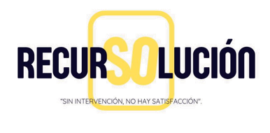
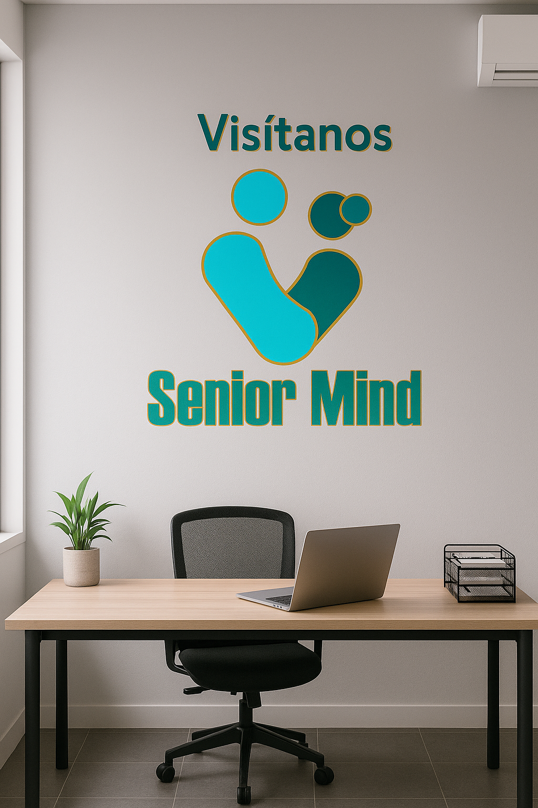
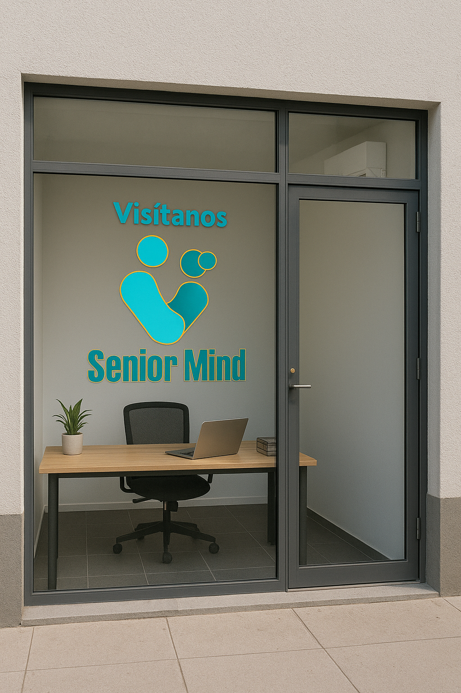

Las organizaciones tienden a priorizar una contratación de una persona joven, haciendo una exclusión a los adultos mayores debido a que no cuenta con los estudios necesarios o incluso por no poseer conocimientos del nivel de algún puesto dentro de la organización o simplemente no se tiene la capacitación para poder laborar.
La cuestión en la que se radica el conflicto, siendo el origen de la consultoría, implica el desempleo para las personas mayores siendo mayormente es el 67% según la (PEA) y del mismo porcentaje el 50% los que laboran de manera informal, por cuestión una de la áreas implicada con más facilidad de acceso de las personas, siendo la parte operativa, describiendo este factor por estereotipos de actividades motrices en lo que pueda gestionar cierta actividad, aunado a ello el sector administrativo externando la ineficiencia de las nuevas tecnologías, en este caso para los adultos mayores, la brecha digital es una realidad que se manifiesta en una variedad de dificultades.
Muchos adultos mayores tienen dificultades para utilizar dispositivos móviles, computadoras o aplicaciones digitales debido a barreras físicas como la falta de familiaridad, la complejidad perceptiva, la visión reducida o la movilidad manual y, en algunos casos la económica, no es de mentir que toda organización este repleta de software de ayuda para su estructura de algunos procesos, acompañado a ello el factor humano, una persona que tuvo una vida activa o en muchos casos parte de no tener un cierto recurso para vivir, no se llega a concebir cierta contratación en organizaciones.
Conocenos
¿Cúal es el objetivo general?

Crear una consultoría enfocada en brindar capacitaciones para preparar a los adultos mayores que quieran incorporarse en el ámbito laboral y facilitarles la búsqueda de una oportunidad de trabajo.
¿Cúales son los objetivos especificos?
-Incrementar la promoción y voz del grupo marginado del 46.1% del adulto mayor para la inducción y comprensión en el sector laboral.
-Desarrollar las habilidades tanto blandas y duras, junto a la actualización del 100% de las nuevas tecnologías para la generar una empleabilidad en un entorno de trabajo inclusivo.
-Actualizar a los adultos mayores diversas habilidades y capacidades para que se desenvuelvan dentro de un ámbito laboral.
-Disminuir el 55% del trabajo informal que existe dentro de los Estados Unidos Mexicanos, relacionado al sector marginado que se estudia, tanto en áreas urbanas como rurales.
-Establecer acuerdos con organizaciones para la inclusión de adultos mayores como parte de su personal, gestionando más del 60% de sus habilidades en un puesto idóneo para su manipulación.
Problemática
La marginación de los adultos mayores dentro del entorno laboral es una problemática creciente que no solo es nuevo, sino que se toma de generaciones pasadas, a pesar de que los trabajadores de mayor edad aportan conocimientos, habilidades y lo más importante experiencia, muchas organizaciones tienden a priorizar una contratación de una persona joven, una exclusión de donde se priva a las empresas una sabiduría y otra afectando una estabilidad económica como emocional.

Trayectoria
Senior Mind dentro de su trayecto a marcado hechos en diferentes instituciones y comter hechos para su futura divulgación, lo que se reafirma el compromiso sobre la reinsección de un sector dentro de un organismo con apoyo del servicio y voluntad.
Plan de inteligencia emocional

¿Qué es Recorsolución?
El título que recibe el programa de inteligencia emocional es “Recursolución.”
Siendo una combinación de dos palabras “recurso” y “solución”, debido a que se
utilizara diferentes recursos, para lograr la solución de los hallazgos encontrados.
El propósito de la aplicación del programa dentro de las instalaciones de Bodega Aurrera es el
desarrollo de habilidades para reconocer, comprender y gestionar las propias
emociones y de los demás, como sugiere Peter Salovey “la capacidad de percibir,
utilizar, comprender y regular eficazmente las emociones en uno mismo y en los
otros, de forma que nos permita desarrollar un comportamiento adaptivo al entorno”.
Diagnostico de liderazgo
El presente escrito, tiene como finalidad examinar aspectos más relevantes
a través del modelo del condicionamiento operante del autor Skinner. Donde se
enfoca en la interpretación dentro de un grupo de estudio, identificando tendencias,
patrones y relaciones que sobresalgan dentro de Recorcholis VAS.
Una marginación del capital humano
Investigación cualitativa resalta sobra la comprensión de la información
proporcionada de primera mano, o de diversas hipótesis de autores, partiendo de
métodos para la recopilación de datos no numéricos, siendo estos como palabras,
imágenes y comportamientos generando un análisis profundo de casos de estudio,
esto con la interpretación del contexto establecido.
Marco teórico
Se aborda diferentes cosmovisiones de estilos de vida que
se enfrentan en el día a día, esto con la finalidad de apoyar, justificar y ser motivo
de desarrollar nuestra visión. Con el apoyo de diferentes técnicas para el
alojamiento de información de manera cualitativa, esta manera para hacer más
hincapié a un nivel profundo para un análisis o evaluación que marca la tendencia.

Visítanos
Encuentranos en:
#2124 Blvrd Valle de Santiago, Salamanca, Guanajuato, México.

¿Estas listo para aprender?
No lo dudes, hazlo ahora y sera un glorioso proposito.
Aprende ahora